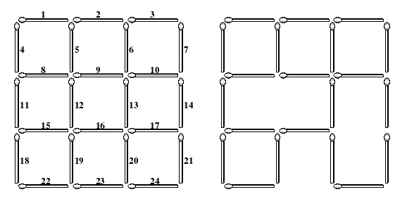

The left figure below shows a complete 3x3 grid
made with 2x(3x4) (=24) matchsticks. The lengths of
all matchsticks are one. You can find many squares of different
sizes in the grid. The size of a square is the length of its
side. In the grid shown in the left figure, there are 9 squares of size
one, 4 squares of size two, and 1 square of size three.
Each matchstick of the complete grid is identified with a unique number
which is assigned from left to right
and from top to bottom as shown in the left figure. If you take some
matchsticks out from the complete grid,
then some squares in the grid will be destroyed, which results in an
incomplete 3×3 grid. The right figure
illustrates an incomplete 3×3 grid after removing three
matchsticks numbered with 12, 17 and 23. This
removal destroys 5 squares of size one, 3 squares of size two, and 1
square of size three. Consequently, the
incomplete grid does not have squares of size three, but still has 4
squares of size one and 1 square of size two.

As input, you are given a (complete or incomplete) n × n
grid made with no more than 2n(n+1) matchsticks for a
natural number n 5 . Your task is to compute the minimum
number of matchsticks taken
out to destroy all the squares existing in the input n ×
n grid.
The input consists of T test cases. The number of test cases (T)
is given in the first line of the input file.
Each test case consists of two lines: The first line contains a natural
number n , not greater than 5, which
implies you are given a (complete or incomplete) n × n
grid as input, and the second line begins with a
nonnegative integer k , the number of matchsticks that are
missing from the complete n × n grid, followed
by
k numbers specifying the matchsticks. Note that if k is
equal to zero, then the input grid is a complete n × n
grid; otherwise, the input grid is an incomplete n × n
grid such that the specified k matchsticks are missing
from the complete n × n grid.
Print exactly one line for each test case. The line should contain the
minimum number of matchsticks that
have to be taken out to destroy all the squares in the input grid.
2
2
0
3
3 12 17 23
3
3